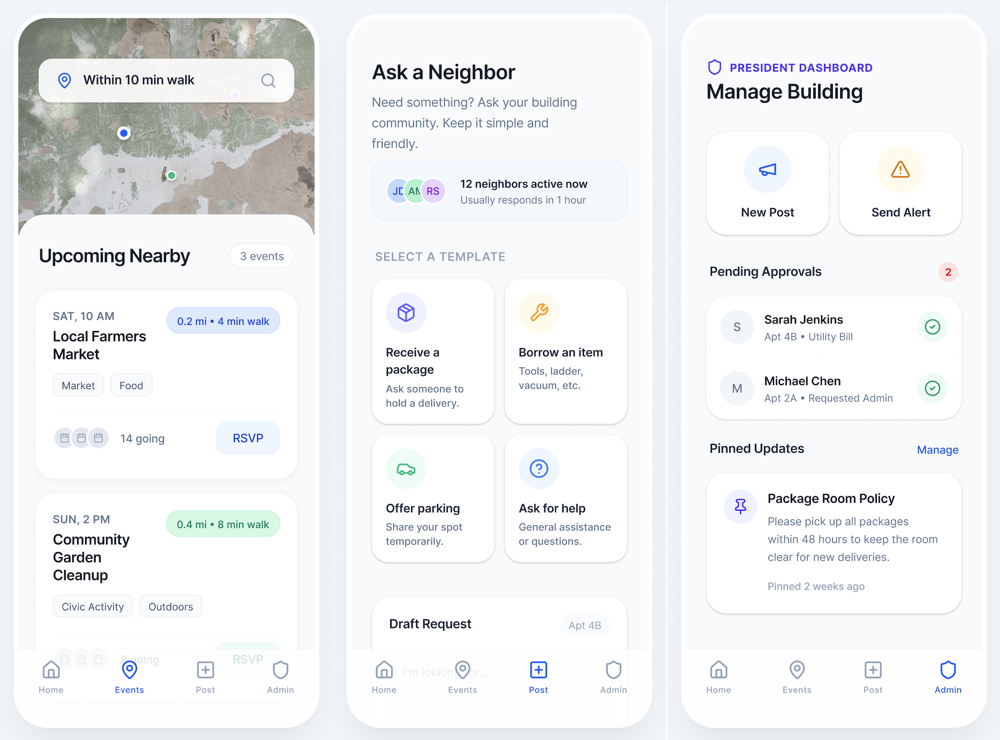

UX Research + Community Platform
Neighbors Platform
A hyper-local platform concept designed to help apartment residents connect, share updates, and build trust without increasing social pressure.

Overview
Apartment buildings are full of people living side by side, but many residents still feel socially disconnected from the people closest to them. Important updates are missed, local opportunities for connection go unseen, and communication often falls into awkward extremes: either too impersonal or too socially demanding.
The Neighbors Platform was developed as a hyper-local platform concept for apartment communities. The goal was to create a structured, low-pressure communication layer that helps residents stay informed, build trust, and participate at their own comfort level.
The Problem
Many residents want some sense of connection within their building, but existing tools do not serve that need well. Group chats can feel noisy or invasive, building notices are often passive and one-way, and broader social platforms are too open to feel appropriate for a contained residential setting.
The challenge was not simply “how do we get neighbors to talk more.” It was how to design a space where local awareness and participation could increase without also increasing pressure, awkwardness, or unwanted social exposure.
Design Challenge
How might we help apartment residents feel more informed and locally connected while preserving privacy, boundaries, and low-pressure participation?
Initial Hypothesis
The project began with the hypothesis that if apartment residents were given a structured, low-pressure, building-specific communication layer, participation and local awareness would increase without increasing perceived social pressure.
This framed the project around a key UX tension: people may want connection, but not necessarily the burden of constant social interaction. The platform needed to support community while respecting emotional boundaries.
Research Approach
To understand the problem space, I explored how residents currently navigate communication, trust, and participation within apartment communities. The work focused on hyper-local behaviors, communication norms, and the moments where residents either engaged or withdrew.
Research included interviews, synthesis of recurring behavioral patterns, and structured analysis of what makes neighborhood-level interaction feel useful versus uncomfortable.
Residents Want Relevance
People care most about information that is directly tied to their building, immediate environment, and daily routines.
Pressure Reduces Participation
Open-ended or highly social spaces can discourage engagement, especially when people feel watched, obligated, or uncertain about norms.
Trust Requires Boundaries
Residents were more comfortable engaging when communication felt contained, local, and limited to a credible building-level group.
Key Insights
The research showed that the issue was not a lack of interest in local connection. Instead, residents often lacked the right environment for participating comfortably. Existing communication methods either felt too broad, too unstructured, or too socially loaded.
People were more willing to engage when communication felt useful, local, bounded, and optional.
This shifted the project away from designing a “social app” and toward designing a trust-based participation system for apartment life.
Opportunity Areas
Based on the research, several clear product opportunities emerged:
- Create communication at the building level rather than city-wide or public scale
- Support passive awareness as well as active posting
- Reduce ambiguity around who content is for and where it belongs
- Allow residents to engage without feeling forced into conversation
- Build trust through structure, moderation cues, and local boundaries
Design Direction
The platform concept centered on lightweight, building-specific communication. Instead of encouraging constant chatting, the experience was designed to support practical local awareness, occasional participation, and a sense of contained community.
This meant prioritizing features and content patterns that felt useful and low stakes: updates, shared notices, local recommendations, building-level posts, and moments of interaction that did not require heavy commitment.
Experience Principles
- Keep communication hyper-local and context-specific
- Design for trust before designing for engagement volume
- Make participation flexible, optional, and low pressure
- Support awareness without requiring constant interaction
- Create structure that reduces social ambiguity
Prototype Thinking
I translated the concept into product structure and interface design ideas that explored how residents might move through the experience. The prototype focused on how users would discover building updates, understand what was relevant to them, and choose whether or not to participate.
The emphasis was not on maximizing posting activity, but on making the platform feel trustworthy, contained, and worth returning to. This was especially important because the value of the product depended on emotional comfort as much as functional utility.
What Was Validated
The research supported the core hypothesis that local awareness and participation can increase when people are given a more structured and contained communication environment.
It also became clear that low-pressure design is not just a stylistic choice. It is central to whether people feel safe enough to engage at all. Trust, in this context, is built through boundaries, relevance, and the ability to participate without social overload.
Outcome
Neighbors App became a strong exploration of community-centered UX, showing how research can uncover subtle social frictions that more conventional product thinking might overlook. The project connected user insight, interface direction, and platform strategy around one core idea: community tools work best when they respect the emotional realities of participation.
Reflection
This project deepened my interest in designing for trust, belonging, and local community behavior. It also reinforced the idea that good UX is not only about making interaction easier, it is about designing systems that feel socially safe, relevant, and human.
More broadly, the work showed me how product design can support connection without forcing intimacy, which feels increasingly important in both digital communities and real-world living spaces.